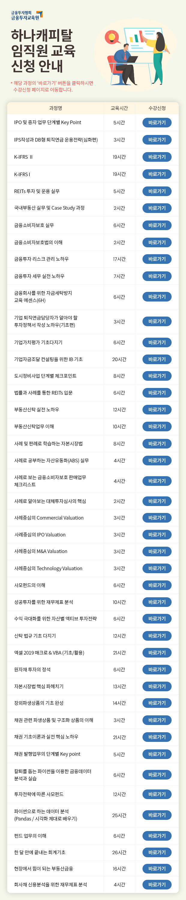

IPO 및 증자 업무 단계별 Key Point
IPS작성과 DB형 퇴직연금 운용전략(심화편)
K-IFRS II
K-IFRS I
REITs 투자 및 운용 실무
국내부동산 실무 및 Case Study 과정
금융소비자보호 실무
금융소비자보호법의 이해
금융투자 리스크 관리 노하우
금융투자 세무 실전 노하우
금융회사를 위한 자금세탁방지 교육 에센스(6H)
기업 퇴직연금담당자가 알아야 할 투자정책서 작성 노하우(기초편)
기업가치평가 기초다지기
기업자금조달 컨설팅을 위한 IB 기초
도시정비사업 단계별 체크포인트
법률과 사례를 통한 REITs 입문
부동산신탁 실전 노하우
부동산신탁업무 이해
사례 및 판례로 학습하는 자본시장법
사례로 공부하는 자산유동화(ABS) 실무
사례로 보는 금융소비자보호 판매업무 체크리스트
사례로 알아보는 대체투자심사의 핵심
사례중심의 Commercial Valuation
사례중심의 IPO Valuation
사례중심의 M&A Valuation
사례중심의 Technology Valuation
사모펀드의 이해
성공투자를 위한 재무제표 분석
수익 극대화를 위한 자산별 액티브 투자전략
신탁 법규 기초 다지기
엑셀 2019 매크로 & VBA (기초/활용)
원자재 투자의 정석
자본시장법 핵심 파헤치기
장외파생상품의 기초 완성
채권 관련 파생상품 및 구조화 상품의 이해
채권 기초이론과 실전 핵심 노하우
채권 발행업무의 단계별 Key point
칼퇴를 돕는 파이썬을 이용한 금융데이터 분석과 실습
투자전략에 따른 사모펀드
파이썬으로 하는 데이터 분석 (Pandas / 시각화 제대로 배우기)
펀드 업무의 이해
한 달 만에 끝내는 회계기초
현장에서 힘이 되는 부동산금융
회사채 신용분석을 위한 재무제표 분석